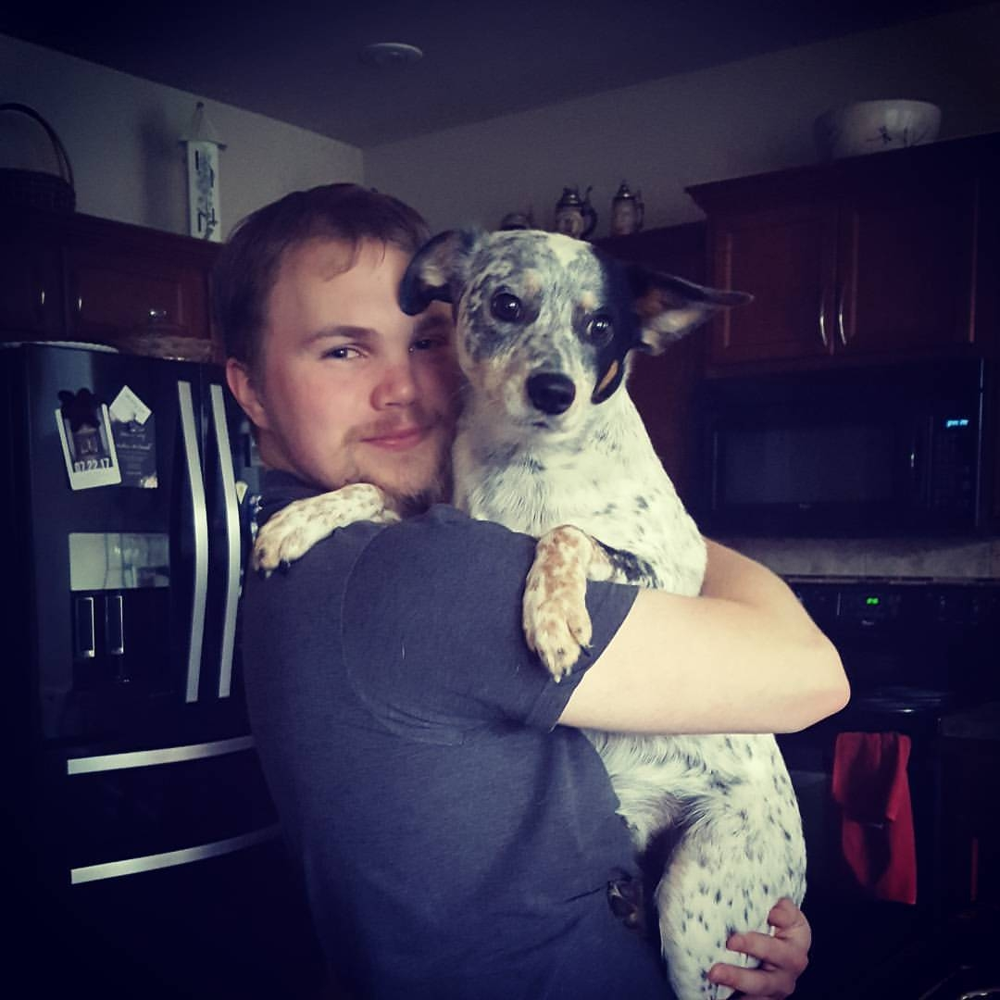

Say hello to the next Staple in your development team!
I am a fledgeling web developer based out of Puylluap, Washington with a passion for computers and an analytical mind I am looking to build a stong career in the digital sector.
When you dont find me behind my keyboard you can find me:
- Exploring the woods
- Building worlds for Dungeons & Dragons
- At the local card shop practicing for upcoming TCG tournaments
- In the kitchen cooking up something new
About Me
After a long run around chasing diffrent jobs I decided to settle down and work with one of my passions. I have loved computers since I took apart the family PC at age 10 and put it back together.
I chose to begin my career with Thinkful and I'm excited for this first step in the next chapter of my life with a fantastic team of like minded individuals!
Please reach out to me if you have any questions or if would like to get in touch. My skills might be rough but my drive is solid and I am always looking to refine my craft